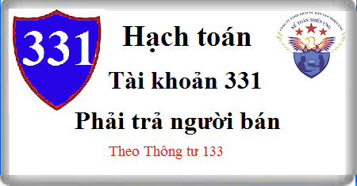

Hướng dẫn cách hạch toán Tài khoản 331 theo Thông tư 133, cách hạch toán phải trả người bán, hạch toán trả trước tiền hàng, mua hàng nhưng chưa thanh toán, chiết khấu thanh toán, thương mại, giảm giá hàng bán, hàng bán trả lại …
1. Nguyên tắc kế toán Tài khoản 331 - Phải trả người bán
a) Tài khoản này dùng để phản ánh tình hình thanh toán về các khoản nợ phải trả của doanh nghiệp cho người bán vật tư, hàng hóa, người cung cấp dịch vụ, người bán TSCĐ, BĐSĐT, các khoản đầu tư tài chính theo hợp đồng kinh tế đã ký kết. Tài khoản này cũng được dùng để phản ánh tình hình thanh toán về các khoản nợ phải trả cho người nhận thầu xây lắp chính, phụ. Không phản ánh vào tài khoản này các nghiệp vụ mua trả tiền ngay.
b) Nợ phải trả cho người bán, người cung cấp, người nhận thầu xây lắp cần được hạch toán chi tiết cho từng đối tượng phải trả. Trong chi tiết từng đối tượng phải trả, tài khoản này phản ánh cả số tiền đã ứng trước cho người bán, người cung cấp, người nhận thầu xây lắp nhưng chưa nhận được sản phẩm, hàng hóa, dịch vụ, khối lượng xây lắp hoàn thành bàn giao.
c) Bên giao nhập khẩu ủy thác ghi nhận trên tài khoản này số tiền phải trả người bán về hàng nhập khẩu thông qua bên nhận nhập khẩu ủy thác như khoản phải trả người bán thông thường.
d) Những vật tư, hàng hóa, dịch vụ đã nhận, nhập kho nhưng đến cuối kỳ vẫn chưa có hóa đơn thì sử dụng giá tạm tính để ghi sổ và phải điều chỉnh về giá thực tế khi nhận được hóa đơn hoặc thông báo giá chính thức của người bán.
đ) Khi hạch toán chi tiết các khoản này, kế toán phải hạch toán rõ ràng, rành mạch các khoản chiết khấu thanh toán, chiết khấu thương mại, giảm giá hàng bán của người bán, người cung cấp nếu chưa được phản ánh trong hóa đơn mua hàng.
2. Kết cấu và nội dung Tài khoản 331 - Phải trả cho người bán
Bên Nợ:
- Số tiền đã trả cho người bán vật tư, hàng hóa, người cung cấp dịch vụ, người nhận thầu xây lắp;
- Số tiền ứng trước cho người bán, người cung cấp, người nhận thầu xây lắp nhưng chưa nhận được vật tư, hàng hóa, dịch vụ, khối lượng sản phẩm xây lắp hoàn thành bàn giao;
- Số tiền người bán chấp thuận giảm giá hàng hóa hoặc dịch vụ đã giao theo hợp đồng;
- Chiết khấu thanh toán và chiết khấu thương mại được người bán chấp thuận cho doanh nghiệp giảm trừ vào khoản nợ phải trả cho người bán;
- Giá trị vật tư, hàng hóa thiếu hụt, kém phẩm chất khi kiểm nhận và trả lại người bán;
- Điều chỉnh số chênh lệch giữa giá tạm tính lớn hơn giá thực tế của số vật tư, hàng hóa, dịch vụ đã nhận, khi có hóa đơn hoặc thông báo giá chính thức;
- Đánh giá lại các khoản phải trả cho người bán là khoản mục tiền tệ có gốc ngoại tệ (trường hợp tỷ giá ngoại tệ giảm so với tỷ giá ghi sổ kế toán).
Bên Có:
- Số tiền phải trả cho người bán vật tư, hàng hóa, người cung cấp dịch vụ và người nhận thầu xây lắp;
- Điều chỉnh số chênh lệch giữa giá tạm tính nhỏ hơn giá thực tế của số vật tư, hàng hóa, dịch vụ đã nhận, khi có hóa đơn hoặc thông báo giá chính thức;
- Đánh giá lại các khoản phải trả cho người bán là khoản mục tiền tệ có gốc ngoại tệ (trường hợp tỷ giá ngoại tệ tăng so với tỷ giá ghi sổ kế toán).
Số dư bên Có: Số tiền còn phải trả cho người bán hàng, người cung cấp dịch vụ, người nhận thầu xây lắp.
Tài khoản này có thể có số dư bên Nợ: Số dư bên Nợ (nếu có) phản ánh số tiền đã ứng trước cho người bán hoặc số tiền đã trả nhiều hơn số phải trả cho người bán theo chi tiết của từng đối tượng cụ thể. Khi lập Báo cáo tình hình tài chính, phải lấy số dư chi tiết của từng đối tượng phản ánh ở tài khoản này để ghi 2 chỉ tiêu bên “Tài sản” và bên “Nguồn vốn”.
3. Cách hạch toán phải trả người bán Tài khoản 331:
3.1. Mua vật tư, hàng hóa chưa trả tiền người bán về nhập kho trong trường hợp hạch toán hàng tồn kho theo phương pháp kê khai thường xuyên hoặc khi mua TSCĐ:
a) Trường hợp mua trong nội địa, ghi:
- Nếu thuế GTGT đầu vào được khấu trừ, ghi:
Nợ các Tài khoản 152, 153, 156, 157, 211... (giá chưa có thuế GTGT)
Nợ TK 133 Thuế GTGT được khấu trừ (1331)
Có TK 331 - Phải trả cho người bán (tổng giá thanh toán).
- Trường hợp thuế GTGT đầu vào không được khấu trừ thì giá trị vật tư, hàng hóa, TSCĐ bao gồm cả thuế GTGT (tổng giá thanh toán).
b) Trường hợp nhập khẩu, ghi:
- Phản ánh giá trị hàng nhập khẩu bao gồm cả thuế TTĐB, thuế XK, thuế BVMT (nếu có) và thuế GTGT đầu vào không được khấu trừ, ghi:
Nợ các Tài khoản 153, 152, 156, 157, 211
Có TK 331 - Phải trả cho người bán
Có TK 3332 - Thuế TTĐB (nếu có)
Có TK 3333 - Thuế xuất nhập khẩu (chi tiết thuế nhập khẩu, nếu có)
Có TK 33381 - Thuế bảo vệ môi trường.
Có TK 3331 - Thuế GTGT phải nộp (33312) (Thuế GTGT của hàng hóa nhập khẩu không được khấu trừ).
- Nếu thuế GTGT hàng nhập khẩu được khấu trừ, ghi:
Nợ TK 133 - Thuế GTGT được khấu trừ (1331, 1332)
Có TK 3331 Thuế GTGT phải nộp (33312).
3.2. Mua vật tư, hàng hoá chưa trả tiền người bán về nhập kho trong trường hợp hạch toán hàng tồn kho theo phương pháp kiểm kê định kỳ:
a. Trường hợp mua trong nội địa:
- Nếu thuế GTGT đầu vào được khấu trừ, ghi:
Nợ TK 611 - Mua hàng (giá chưa có thuế GTGT)
Nợ TK 133 - Thuế GTGT được khấu trừ
Có TK 331 - Phải trả cho người bán (tổng giá thanh toán).
- Trường hợp thuế GTGT đầu vào không được khấu trừ thì giá trị vật tư, hàng hóa bao gồm cả thuế GTGT (tổng giá thanh toán)
b. Trường hợp nhập khẩu, ghi:
- Phản ánh giá trị hàng nhập khẩu bao gồm cả thuế TTĐB, thuế XK, thuế BVMT (nếu có), và thuế GTGT đầu vào không được khấu trừ, ghi:
Nợ TK 611 - Mua hàng.
Có TK 331 - Phải trả cho người bán
Có TK 3331 - Thuế GTGT phải nộp (33312) (Thuế GTGT đầu vào của hàng nhập khẩu không được khấu trừ).
Có TK 3332 - Thuế TTĐB (nếu có)
Có TK 3333 - Thuế xuất nhập khẩu (chi tiết thuế nhập khẩu, nếu có)
Có TK 33381 - Thuế bảo vệ môi trường.
- Nếu thuế GTGT đầu vào được khấu trừ, ghi:
Nợ TK 133 - Thuế GTGT được khấu trừ (1331)
Có TK 3331 - Thuế GTGT phải nộp (33312).
3.3. Trường hợp đơn vị có thực hiện đầu tư XDCB theo phương thức giao thầu, khi nhận khối lượng xây lắp hoàn thành bàn giao của bên nhận thầu xây lắp, căn cứ hợp đồng giao thầu và biên bản bàn giao khối lượng xây lắp, hoá đơn khối lượng xây lắp hoàn thành:
- Nếu thuế GTGT đầu vào được khấu trừ, ghi:
Nợ Tài khoản 241 XDCB dở dang (giá chưa có thuế GTGT)
Nợ TK 133 - Thuế GTGT được khấu trừ
Có TK 331 - Phải trả cho người bán (tổng giá thanh toán).
- Trường hợp thuế GTGT đầu vào không được khấu trừ thì giá trị đầu tư XDCB bao gồm cả thuế GTGT (tổng giá thanh toán).
3.4. Khi ứng trước tiền hoặc thanh toán số tiền phải trả cho người bán vật tư, hàng hoá, người cung cấp dịch vụ, người nhận thầu xây lắp, ghi:
Nợ TK 331 - Phải trả cho người bán
Có các Tài khoản 111, 112, 341,...
3.5. Trường hợp ứng trước tiền cho người bán hàng và cung cấp dịch vụ bằng ngoại tệ:
- Ghi nhận số tiền ứng trước cho người bán hàng và cung cấp dịch vụ bằng ngoại tệ theo tỷ giá giao dịch thực tế tại thời điểm ứng trước, ghi:
+ Trường hợp bên Có TK tiền sử dụng tỷ giá ghi sổ:
Nợ TK 331 – Phải trả cho người bán (tỷ giá giao dịch thực tế)
Nợ TK 635 – Chi phí tài chính (nếu phát sinh lỗ tỷ giá)
Có các TK 111, 112 (1112, 1121) (tỷ giá ghi sổ)
Có TK 515 - Doanh thu hoạt động tài chính (nếu phát sinh lãi tỷ giá).
+ Trường hợp bên Có TK tiền sử dụng tỷ giá giao dịch thực tế:
Nợ TK 331 – Phải trả cho người bán
Có các TK 111, 112 (1112, 1121)
- Khoản chênh lệch tỷ giá phát sinh trong kỳ được ghi nhận ngay tại thời điểm ứng trước tiền cho người bán hoặc ghi nhận định kỳ tùy theo đặc điểm hoạt động kinh doanh và yêu cầu quản lý của doanh nghiệp.
(+) Nếu phát sinh lỗ chênh lệch tỷ giá, ghi:
Nợ TK 635 - Chi phí tài chính (chênh lệch giữa tỷ giá ghi sổ của tài khoản tiền lớn hơn tỷ giá giao dịch thực tế tại thời điểm ứng trước).
Có các TK 111, 112 (1112, 1121) , 331.
(+) Nếu phát sinh lãi chênh lệch tỷ giá, ghi:
Nợ các TK 111, 112 (1112, 1121) , 331. (chênh lệch giữa tỷ giá ghi sổ của tài khoản tiền nhỏ hơn tỷ giá giao dịch thực tế tại thời điểm ứng trước).
Có TK 515 – Doanh thu hoạt động tài chính
- Khi nhận hàng hóa, dịch vụ, tài sản cố định, nghiệm thu khối lượng XDCB hoàn thành thì giá trị tài sản mua, chi phí XDCB dở dang, nợ phải trả người bán tương ứng với số tiền ứng trước được ghi nhận theo tỷ giá giao dịch thực tế tại thời điểm ứng trước, phần giá trị tương ứng với số còn phải trả được ghi nhận theo tỷ giá giao dịch thực tế tại thời điểm ghi nhận tài sản, ghi:
Nợ các Tài khoản 151, 152, 153, 156, 211, 241 ...
Có TK 331 – Phải trả người bán.
3.6. Khi nhận lại tiền do người bán hoàn lại số tiền đã ứng trước vì không cung cấp được hàng hóa, dịch vụ, ghi:
Nợ các TK 111, 112,...
Có TK 331 - Phải trả cho người bán.
3.7. Nhận dịch vụ cung cấp (chi phí vận chuyển hàng hoá, điện, nước, điện thoại, kiểm toán, tư vấn, quảng cáo, dịch vụ khác) của người bán:
- Nếu thuế GTGT đầu vào được khấu trừ, ghi:
Nợ TK 156 Hàng hóa
Nợ TK 241 Xây dựng cơ bản dở dang
Nợ TK 242 Chi phí trả trước
Nợ các Tài khoản 642, 635, 811
Nợ TK 133 - Thuế GTGT được khấu trừ (1331) (nếu có)
Có TK 331 - Phải trả cho người bán (tổng giá thanh toán).
- Trường hợp thuế GTGT đầu vào không được khấu trừ thì giá trị dịch vụ bao gồm cả thuế GTGT (tổng giá thanh toán).
3.8. Khoản Chiết khấu thanh toán được hưởng khi mua vật tư, hàng hoá, TSCĐ do thanh toán trước thời hạn được trừ vào khoản nợ phải trả người bán, người cung cấp, ghi:
Nợ TK 331 - Phải trả cho người bán
Có TK 515 - Doanh thu hoạt động tài chính.
3.9. Trường hợp vật tư, hàng hoá mua vào phải trả lại hoặc được người bán chấp thuận giảm giá do không đúng quy cách, phẩm chất được tính trừ vào khoản nợ phải trả cho người bán, ghi:
Nợ TK 331 - Phải trả cho người bán
Có TK 133 - Thuế GTGT được khấu trừ (1331) (nếu có)
Có các TK 152, 153, 156, 611,...
3.10. Trường hợp các khoản nợ phải trả cho người bán không tìm ra chủ nợ hoặc chủ nợ không đòi và được xử lý ghi tăng thu nhập khác của doanh nghiệp, ghi:
Nợ TK 331 - Phải trả cho người bán
Có TK 711 - Thu nhập khác.
3.11. Đối với nhà thầu chính, khi xác định giá trị khối lượng xây lắp phải trả cho nhà thầu phụ theo hợp đồng kinh tế đã ký kết, căn cứ vào hóa đơn, phiếu giá công trình, biên bản nghiệm thu khối lượng xây lắp hoàn thành và hợp đồng giao thầu phụ, ghi:
Nợ TK 632 - Giá vốn hàng bán (giá chưa có thuế GTGT)
Nợ TK 133 - Thuế GTGT được khấu trừ (1331)
Có TK 331 - Phải trả cho người bán (tổng số tiền phải trả cho nhà thầu phụ gồm cả thuế GTGT đầu vào).
3.12 Trường hợp doanh nghiệp nhận bán hàng đại lý, bán đúng giá, hưởng hoa hồng.
- Khi nhận hàng bán đại lý, doanh nghiệp chủ động theo dõi và ghi chép thông tin về hàng nhận bán đại lý trong phần thuyết minh Báo cáo tài chính.
- Khi bán hàng nhận đại lý, ghi:
Nợ các TK 111, 112, 131,... (tổng giá thanh toán)
Có TK 331 - Phải trả cho người bán (giá giao bán đại lý + thuế).
Đồng thời doanh nghiệp theo dõi và ghi chép thông tin về hàng nhận bán đại lý đã xuất bán trong phần thuyết minh Báo cáo tài chính.
- Khi xác định hoa hồng đại lý được hưởng, tính vào doanh thu hoa hồng về bán hàng đại lý, ghi:
Nợ TK 331 - Phải trả cho người bán
Có TK 511 - Doanh thu bán hàng và cung cấp dịch vụ
Có TK 3331 - Thuế GTGT phải nộp (nếu có).
- Khi thanh toán tiền cho bên giao hàng đại lý, ghi:
Nợ TK 331 - Phải trả cho người bán (giá bán trừ (-) hoa hồng đại lý)
Có các TK 111, 112,...
3.13. Kế toán phải trả cho người bán tại đơn vị giao uỷ thác nhập khẩu:
- Khi trả trước một khoản tiền uỷ thác mua hàng theo hợp đồng uỷ thác nhập khẩu cho đơn vị nhận uỷ thác nhập khẩu mở LC... căn cứ các chứng từ liên quan, ghi:
Nợ TK 331 - Phải trả cho người bán (chi tiết cho từng đơn vị nhận uỷ thác)
Có các TK 111, 112,...
- Khi nhận hàng ủy thác nhập khẩu do bên nhận ủy thác giao trả, kế toán thực hiện như đối với hàng nhập khẩu thông thường.
- Khi trả tiền cho đơn vị nhận uỷ thác nhập khẩu về số tiền hàng nhập khẩu và các chi phí liên quan trực tiếp đến hàng nhập khẩu, căn cứ các chứng từ liên quan, ghi:
Nợ TK 331 - Phải trả cho người bán (chi tiết cho từng đơn vị nhận uỷ thác)
Có các TK 111, 112,...
- Phí uỷ thác nhập khẩu phải trả đơn vị nhận uỷ thác được tính vào giá trị hàng nhập khẩu, căn cứ các chứng từ liên quan, ghi:
Nợ các TK 151, 152, 156, 211,...
Nợ TK 133 - Thuế GTGT được khấu trừ
Có TK 331- Phải trả cho người bán(chi tiết từng đơn vị nhận uỷ thác).
- Việc thanh toán nghĩa vụ thuế đối với hàng nhập khẩu thực hiện theo quy định của TK 333 - Thuế và khoản phải nộp Nhà nước.
- Đơn vị nhận uỷ thác không sử dụng tài khoản này để phản ánh các nghiệp vụ thanh toán ủy thác mà phản ánh qua các Tài khoản 138 và TK 338 Phải trả phải nộp khác
3.14. Tại thời điểm lập Báo cáo tài chính, số dư nợ phải trả cho người là khoản mục tiền tệ có gốc ngoại tệ được đánh theo tỷ giá chuyển khoản trung bình cuối kỳ của ngân hàng thương mại nơi doanh nghiệp thường xuyên có giao dịch:
- Nếu tỷ giá ngoại tệ giảm so với Đồng tiền ghi sổ kế toán, ghi:
Nợ TK 331 - Phải trả cho người bán
Có TK 413 - Chênh lệch tỷ giá hối đoái (4131).
- Nếu tỷ giá ngoại tệ tăng so với Đồng tiền ghi sổ kế toán, ghi:
Nợ TK 413 - Chênh lệch tỷ giá hối đoái (4131)
Có TK 331 - Phải trả cho người bán.
-----------------------------------------
Kế toán Diệu Tâm xin chúc bạn thành công! Các bạn muốn học thực hành kê khai thuế - Quyết toán thuế trên phần mềm HTKK, hoàn thiện sổ sách – Lập báo cáo tài chính trên Excel và Misa thực tế, chuyến sâu… Có thể tham gia: Lớp học kế toán thực hành.
